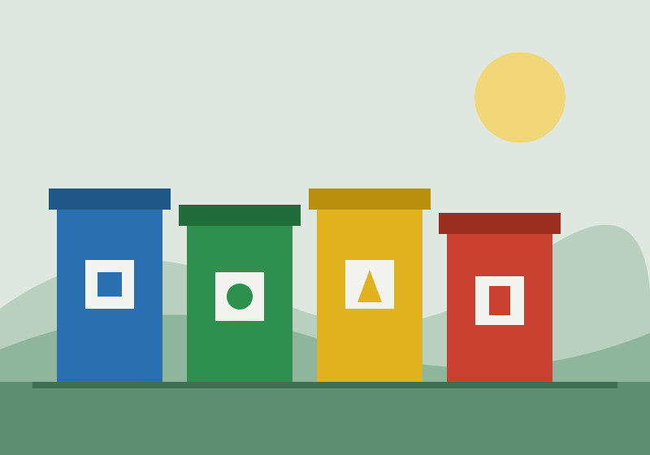
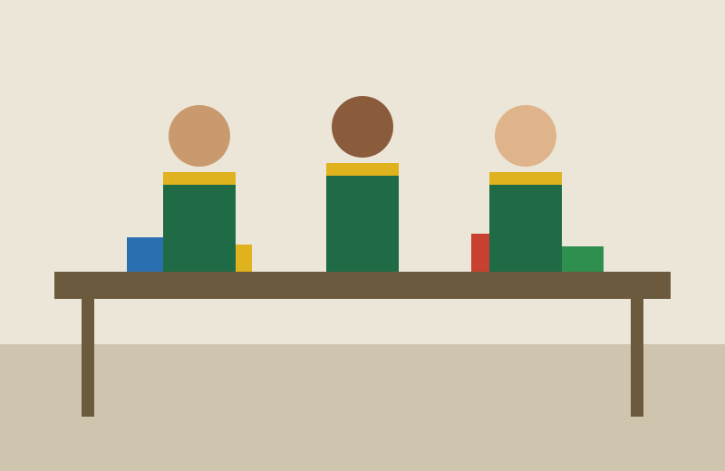

Missão
Gerar renda e dignidade por meio da reciclagem, aproximando cooperativas, escolas e a comunidade.
A Ciclo Vivo apoia cooperativas de catadores, ensina separação de resíduos em escolas e transforma o que seria lixo em trabalho digno na zona oeste de São Paulo.

Nascemos em 2012, quando um grupo de moradores da Vila Reciclagem percebeu que os catadores do bairro vendiam material por preços muito abaixo do mercado. Montamos um galpão compartilhado, compramos uma prensa e passamos a negociar em conjunto.
Gerar renda e dignidade por meio da reciclagem, aproximando cooperativas, escolas e a comunidade.
Ser referência em coleta seletiva com inclusão social nas grandes cidades brasileiras.
Transparência nas contas, respeito ao trabalho de quem coleta e educação como caminho para mudar hábitos.
A associação é conduzida por uma diretoria eleita a cada dois anos em assembleia aberta aos cooperados, voluntários e doadores. Um conselho fiscal independente revisa as contas todo semestre.

Publicamos todo ano o relatório de atividades, o balanço financeiro e o parecer do conselho fiscal. Doadores cadastrados recebem um resumo trimestral por e-mail mostrando onde cada real foi aplicado.
Em 2025, 62% foi para a operação da cooperativa, 21% para educação ambiental, 11% para a oficina de reaproveitamento e 6% para custos administrativos.
Estatuto, ata de eleição da diretoria, balanço anual, relatório de atividades e parecer do conselho fiscal. Para receber os arquivos, escreva para o e-mail de contato.
Visitas ao galpão são abertas ao público às quartas-feiras, às 14h. Para empresas e escolas que querem agendar uma coleta, use o telefone ou o e-mail abaixo.